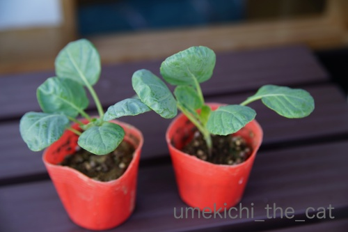
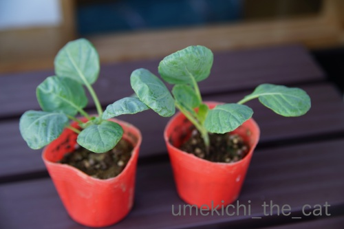

くま吉、再び [梅吉]
･゜ﾟ･*:.｡..｡.:*･゜ﾟ･*:.｡. .｡.:*･゜ﾟ･*･゜ﾟ･*:.｡..｡.:*･゜ﾟ･*:.｡..｡.:*･゜ﾟ･*

★拡散希望★兄弟猫遺棄【千葉県柏市 沼南近隣センター（旧 沼南公民館）】
引き続きのお願いです。猫を探しています。
昨年2017年12月ごろ里親により
千葉県柏市沼南近隣センター付近へ車で連れて行かれ
寒空の下置き去りにされてしまいました。
情報がありましたらコメント欄で結構です。
お知らせくださいませm(_ _)m
･゜ﾟ･*:.｡..｡.:*･゜ﾟ･*:.｡. .｡.:*･゜ﾟ･*･゜ﾟ･*:.｡..｡.:*･゜ﾟ･*:.｡..｡.:*･゜ﾟ･*
お猿さんみたいだ、なんて言わないで下さいねw

ねこくまちゃんの被り物、（かなり前なんですが）またおっとが（満面の笑顔で）ゲットしてきました。
くろくまちゃんの方がクマっぽいですが
色のトーンが同じなのでこちらの方がより違和感が無い感じがします。
付き合いきれない梅吉さんはあくびをして

![[猫]](https://blog.ss-blog.jp/_images_e/101.gif) あほらしいわ・・・
あほらしいわ・・・
と横になっちゃいましたけど(⌒_⌒;

ちゃんとキメ顔もしてくれましたよ＾＾
（白ぱんつもチャームポイントでーすＯ(≧▽≦)Ｏ）
 ↑ガブッと一押し↑
↑ガブッと一押し↑
今年のベランダ栽培枝豆、花が咲くまでは割と順調だったのですが
葉やサヤが黄色く変化し始めたので早々に刈り取りました。
色が悪いですよねー。
種を植えた時期が悪かったのかもしれません。
ちょっと固かったけど味は美味しかったですよ。
枝豆リベンジというわけではありませんが、週末芽キャベツの苗を買ってきました。

芽キャベツの生っている様子って面白いんですよ。ご存知ですか？
（「生る」で合ってますか。「結球」？）
私は初めてみた時「おおおおっ！」ってなりました(≧▽≦)
ちゃんと育ててその姿をお見せ出来るといいなぁ。
ベランダ仕事中、外が涼しい時はお手伝いしてくれます。
（暑いと家の中から出てきませんwww）
土の入っていた袋で寝ないで下さいよっ。
苗を見に行った時すごい名前の商品がありました。
写真を撮り忘れてきたのですが検索したらありました、ありました。
インドジン・ウソツカナイ。
今年はもう育てる時期が過ぎちゃったけど来年買ってみようかしら・・・
★拡散希望★兄弟猫遺棄【千葉県柏市 沼南近隣センター（旧 沼南公民館）】
引き続きのお願いです。猫を探しています。
昨年2017年12月ごろ里親により
千葉県柏市沼南近隣センター付近へ車で連れて行かれ
寒空の下置き去りにされてしまいました。
情報がありましたらコメント欄で結構です。
お知らせくださいませm(_ _)m
･゜ﾟ･*:.｡..｡.:*･゜ﾟ･*:.｡. .｡.:*･゜ﾟ･*･゜ﾟ･*:.｡..｡.:*･゜ﾟ･*:.｡..｡.:*･゜ﾟ･*
お猿さんみたいだ、なんて言わないで下さいねw
ねこくまちゃんの被り物、（かなり前なんですが）またおっとが（満面の笑顔で）ゲットしてきました。
くろくまちゃんの方がクマっぽいですが
色のトーンが同じなのでこちらの方がより違和感が無い感じがします。
付き合いきれない梅吉さんはあくびをして
と横になっちゃいましたけど(⌒_⌒;
ちゃんとキメ顔もしてくれましたよ＾＾
（白ぱんつもチャームポイントでーすＯ(≧▽≦)Ｏ）
今年のベランダ栽培枝豆、花が咲くまでは割と順調だったのですが
葉やサヤが黄色く変化し始めたので早々に刈り取りました。
色が悪いですよねー。
種を植えた時期が悪かったのかもしれません。
ちょっと固かったけど味は美味しかったですよ。
枝豆リベンジというわけではありませんが、週末芽キャベツの苗を買ってきました。

芽キャベツの生っている様子って面白いんですよ。ご存知ですか？
（「生る」で合ってますか。「結球」？）
私は初めてみた時「おおおおっ！」ってなりました(≧▽≦)
ちゃんと育ててその姿をお見せ出来るといいなぁ。
ベランダ仕事中、外が涼しい時はお手伝いしてくれます。
（暑いと家の中から出てきませんwww）
土の入っていた袋で寝ないで下さいよっ。
苗を見に行った時すごい名前の商品がありました。
写真を撮り忘れてきたのですが検索したらありました、ありました。
インドジン・ウソツカナイ。
今年はもう育てる時期が過ぎちゃったけど来年買ってみようかしら・・・

カフェオレ色の梅吉

梅吉 2023年8月10日 永眠


梅吉と出会った譲渡会

犬猫の理由なき殺処分ゼロ
妄想広告
UMEKICHI 光

爆発的に早い！
時々攻撃的！
Thanks to Mr.Boss365
爆発的に早い！
時々攻撃的！
Thanks to Mr.Boss365

あ、ウチとお揃色♡（*´∀｀*）
やはり梅さまもイウォークにはなりませんね。
とってもお似合いですよ*^^*
（そうそう、梅さまは白ぱんつだけなのですね。
うちのは上下白で揃えています（笑））
ベランダ栽培でこんなに立派な枝豆ができるのですね。
結構大きな鉢（プランター？）ですか？
キャベツも楽しみですね！
by Ja-Kou66 (2018-08-27 00:34)
決め顔ポーズの梅吉さん♪ さすがです(#^.^#)
とっても可愛くて似合ってますねぇ～！
そして楽しそうなお手伝い（笑
満足気ですね！
by きぃ (2018-08-27 06:12)
メキャベツが生ってる姿はかなり不気味だと思います＾＾；
by ぽちの輔 (2018-08-27 06:36)
梅吉さん、お似合いですよ。
by ニコニコファイト (2018-08-27 07:23)
旦那様が「満面の笑顔」のようですが、梅吉様は・・・(^_^;)
昔、そーゆーギャグがあったような・・・笑える商品名(^_^;)
by middrinn (2018-08-27 07:49)
おお！確かにこの色の方が馴染んでるわー。
下僕たちの騒ぎをよそに、あほらしと寝てしまうのも
マイペースっぽくてナイスです(≧∀≦)
インド人ウソつかない。のバリエーションに
インド人クソ拭かない。があります。
by よーちゃん (2018-08-27 07:51)
くま吉さん、本猫さんはちょっと呆れ顔ですが
とても可愛くてお似合いですよぉ=(^.^)=
両手開いて白パンツのチラ見えポーズも
さすが魅せますねぇ( ^ω^ )
by ニッキー (2018-08-27 08:07)
おはようございます。
梅吉君！！可愛すぎます！！抱っこ？抱擁したいです！！（涙目）
被り物を嫌がらない梅吉君は、メキシカンレスラーです？
被り物コレクターのご主人さんを賞賛したいです！！（⌒ー⌒）
枝豆は美味しいですね！！
最近の枝豆？湯で時間が短くなったような気がします？
「日めくりニャンコ！」おめでとうございます！！買います！？(=^･ｪ･^=)
by Boss365 (2018-08-27 09:44)
キョロキョロお目目がお猿さんみたいだなんて・・・
思っていませんよ(≧▽≦)
キメ顔とポーズは、くまさんのお相撲みたいだね。
撮影お疲れさまでした。
枝豆、好き！好き！芽キャベツもスクスク育ちますように～。
「インドジン・ウソツカナイ」には笑ったｗ
by emi (2018-08-27 10:20)
すごいなー
すっかりかぶり物OKになってますよね^^
こんなに可愛いカメラ目線でポーズとっちゃってｗｗ
うちは、このあいだインスタ猫友との飲み会で
うさぎちゃんのかぶりものを貰ったのですが
嫌がってる後ろ姿しか撮れませんでした(笑)
しかもブレブレ
by リュカ (2018-08-27 10:50)
ｗｗｗｗｗｗｗｗｗｗｗ
ｗｗｗｗｗｗｗｗｗｗｗ
出オチ
でツボりました。(笑)
徹夜したからかなｗツボがあさいです。＾＾
かわいいなぁ♪
癒されましたー＾＾いろいろありがとです♪
by 猫毬 (2018-08-27 11:48)
お～白パンとのコーディネートばっちりですね(#^^#)
くまというさるというよりかわいい羊ちゃん？？
梅吉さん、被り物に理解があっていいな～ほんと羨ましいです♪
芽キャベツってどうなるの？え～見たい見たい！！
楽しみにしています(^_-)-☆
日めくりニャンコおめでとうございます＼(^o^)／
梅吉さんを超える写真は絶対になかったと確信しています！！
by ゆきち (2018-08-27 12:59)
きゃーーー!! かわいい! かわいい!
自分の耳みたいにぴったりだし特に白パンツのお写真がかわゆい!!
芽キャベツのなってるとこは見たことないので楽しみにしてまーす。
by zombiekong (2018-08-27 13:04)
梅吉さん、ねこくまちゃんの被り物、可愛過ぎます。
お澄まし顔も呆れ顔も、キメ顔も白パンツとお揃いで格好いいです（笑）
枝豆さん、超超の暑さにやられましたか？
でも、採れたてで、味が良くて良かったですね。
インドジン・ウソツカナイ、トキタ種苗のネーミングが凄いとありましたよ。
ネット検索で楽しんでしまいました（笑）
見つけたちぃさん、笑いをありがとう。
by kiki (2018-08-27 16:05)
かわいい!!両手で顔をはさんでウニウニしたい!!色もぴったり。お誂えですか？耳のかたちが違うだけでこんなに印象変わるなんて～～(^O^)
by palpal (2018-08-27 17:29)
梅吉さんは本当にポーズ取るのが上手ですね。
家にも猫の写真がたくさんありますが、決まった！って写真は数える程しかないですよ。
ご近所さんの猫で練習します(^^)
by kou (2018-08-27 17:52)
夏のおもひで写真満月広場に掲載しました。いつもありがとうございます。
by zombiekong (2018-08-27 17:57)
梅吉さん、クマのかぶり物を嫌がらずに被っていますね！
紙袋に入っている梅吉さん、安心した顔ですね(^^)
by ma2ma2 (2018-08-27 18:53)
梅さんがクマちゃんに^^
かわいいですねー。
ベランダでもお手伝いして偉いなぁー
by ryang (2018-08-27 21:58)
おお、似あってますね！
梅吉さん、耳を隠されても平気なのですね。
芽キャベツ、ちょっと見てみたいですー。
インドジン・・・・こりゃまたすごい名前ですね。^^;
by yes_hama (2018-08-27 22:28)
遠くを見つめる梅吉さんが、すべてを語っている様で可愛いです(^^)
菜園をやってた頃、シシトウを作っていました。
甘いので大好きでした。
たまに凄く辛いのがあるんです。
シシトウ・ウソツクです(^^;
スミマセン(^^;
by riverwalk (2018-08-27 22:46)
ハンサムでスタイルも良いから、被り物もよく似合うわ～♪
by Ginger (2018-08-28 12:03)
梅吉さん、シロクマ？似合うじゃないですか。
お耳が自然に見えます。
決めポーズまでバッチリ☆可愛いー！
ええ役者っぷりですのう。前記事の長～く伸びたスタイルも自在だし！＾＾
by sana (2018-08-28 20:59)
おなようございます。
「梅子」再度コメント有難うございます！！
梅吉君同様に「良いキャラ」になる予感あります！？(=^･ｪ･^=)
by Boss365 (2018-08-29 10:29)
Ja-Kou66さん＞
残念ながらイウォークにはなりませんでした。
お猿さんっぽくはなりましたけどw
ちゃーくんはセパレート・タイプなんですね！！
それもかわいい＾＾
梅吉は「パン一」タイプでーすwww
枝豆を育てたのは一般的な大きさの長方形のプランターより
ふた回りくらい大きい型かな？でそれで十分ですよー。
きぃさん＞
はい＾＾カメラ目線で決めてくれました！
あつーい日が続いていたので久しぶりのベランダ
涼しいと出てくるなんてゲンキンなものだなぁと思いつつ
一緒に楽しみました＾＾
ぽちの輔さん＞
そうそう！結構不気味＆衝撃的です(*>艸<)
ニコニコファイトさん＞
ありがとうございまーす＾＾
すっかり定番になった被り物です！
middrinnさん＞
ガチャの前で満足げにピースしている写真でも撮ってくるかな・・・
と言っていたおっとですが
この暑さでガチャにはしばらく近づいていないようです。
達成感＆満足感の溢れた写真が
そのうちアップされるかもしれないのでお楽しみに♪
当然そのあとは梅吉の災難、になりますwww
よーちゃん＞
全身から「つきあいきれんわ・・・」が溢れてますよねwww
インド人？拭かない？？
ああ、手で食べますからねぇ、なんて( ´艸｀)
不浄の手は両手！？
ニッキーさん＞
呆れ顔もなかなか絵になっているな！と大変満足な
アホ飼い主夫婦でございますw
白ぱんつチラ見せのポーズなんていつ覚えたんでしょ♪
Boss365さん＞
抱っこ、抱擁、両手で顔を挟んでわしゃわしゃなんでもありです！
そのあとプロレスに発展しますがお付き合いお願いしますね＾＾
メキシカンレスラー？千の仮面を持つ男、みたいな？？
被り物千個集めましょうか ( ´艸｀)
「日めくりニャンコ！」はリュカさんところのあおくんも登場しますよー。
来年はすももちゃんも、是非！！
「梅子」ちゃんも是非！？いえ、紅ちゃんにしましょうよー。
emiさん＞
でしょ？「ウッキー！」なんて言いたくならないよね？(*>艸<)
開いた両足の踏ん張っている感じがお相撲感あるのよねw
梅吉と組合ってみますか？いい勝負になりますよーヾ(*ΦωΦ)ﾉ
枝豆はそんなに大きなプランターじゃなくても出来ます。
一度にたくさん取れないのが残念なんだけど
（ちゃんと育ったら）採りたてはとびっきりおいしいです。
植えちゃえば手はそんなにかからないから（って私は見てるだけなんだけど）
是非やってみてー＾＾
リュカさん＞
そうなの＾＾
もともとかまってちゃんだから被り物は遊びの延長と思ってそうだし
慣れってすごいと思った。
でも被っている時間って正味１分あるかないかなの。
カメラのピント合わせておいて、素早く被せて気を引く役、
シャッター押す役と連携プレーがないと出来ませんwww
猫毬さん＞
徹夜明けでしたかー！
徹夜明けって変なテンションになる時がありますよねw
でも30年近く徹夜なんてしてないな。
ビューティースリープが大切ですもの＾＾
梅吉、この被り物似合うでしょ。
おっとは辛いことがあるとこの画像見てがんばろ♪って
思うんですって(*>艸<)
ゆきちさん＞
パン一と被り物、人間だったら変態コーデですが
猫なら可愛くなってしまう不思議、ですね(^_－)☆
この色なら羊ちゃんにも見えますねー。
ぐるんと丸い角、つけちゃおうかしら・・・
芽キャベツ、ご期待に添うことの出来るよう育てたいと思います！
カレンダーは可愛さではちょっと押しが弱いかなと思ったので
変化球で攻めて見ました。
インパクトはあったようです！！
zombiekongさん＞
耳の形は全然違うのになんでこんなにしっくりくるんだ！って
感じですよねー。
そのうち丸い耳の猫が品種改良されるかも！？
芽キャベツがなっている所なんてそうそう目にする機会はないですよね。
ちょっとキモびっくり系です！！
おもひで写真、私のコメントまでまんま採用とは思ってませんでしたー。
栗の実？毬栗？？ま、いっかー・・・
kikiさん＞
白ぱんつと被り物、変態ではなく可愛くなっちゃうのが
猫様ですよねー＾＾
枝豆はちょっと植える時期が遅くなってしまったのです。
その上実がなり始めた頃に暴風雨だったり酷暑続きだったり・・・
今年はこの収穫一度で終わってしまったので来年こそは！と思っております。
トキタ種苗のHP私も見直しました！
本当だ！！色々面白いネーミングのものがあるんですねー＾＾
ちなみに売ってたのは天王寺駅前の花屋？種屋？さんです。
palpalさん＞
ね？あつらえたみたいでしょ＾＾
両手でウニウニ！ぜひぜひー。
ウニウニした手にダンゴムシみたいになって絡みつくから
そのままプロレスの相手もヨロシク！(^_－)☆
kouさん＞
ポーズのこつは！
カメラを構える人、後ろでおもちゃを振り回す人
ズバリ、これです ( ´艸｀)
ma2ma2さん＞
袋があったら入る！猫様あるあるです・・・
けど土入ってた袋に入るとは思いませんでしたwww
ryangさん＞
猫ってわりとなんでも被りこなしますよね＾＾
（と思っているのは私がアホ飼い主だからでしょうかw）
お手伝いは涼しくなるとさらに熱心になりまーす＾＾
yes_hamaさん＞
そうなんです！耳を隠されても嫌がりません・・・でも
被っているのは正味１分あるかないかなんですよw
インドジン・・・のたねを扱っている会社
他にも攻めてる名前の商品がたくさんありました。
今度アップしてみようかな＾＾
riverwalkさん＞
辛いシシトウ大好きです！
私はスーパーで買う甘いのが物足りなくて・・・
たまに辛いのがあると「当ったり〜」って思います＾＾
ウソツキ・シシトウ、トキタ種苗に商品化を依頼しようかしら。
Gingerさん＞
そうなんです！！被り物が梅吉の魅力を引き出すというか＾＾
でもこれ以上梅吉にフィットする商品はもう無い予感w
sanaさん＞
このねこくまちゃんシリーズ本当に梅吉にぴったりで・・・＾＾
もうこれ以上の被り物には出会えないかもしれませんw
役者にエンターテイナー、
皆様からたくさんお褒めいただいちゃった。
被り物だけじゃなく
前記事の長〜く伸びたスタイルみたいな写真が
たくさん撮れるように頑張らなくっちゃ！
by ちぃ (2018-08-29 14:54)
ホワイトライオンだぁ～(*´ω｀*)♡
by マーヤ (2018-08-29 18:13)
梅吉さんったら、モデルっぽい表情～ (>∀<●)ﾉ
by yuppie (2018-08-29 23:12)
マーヤさん＞
がおぉ〜っと襲いますよぉ！Ｏ(≧▽≦)Ｏ
yuppieさん＞
最近は被り物の出るとしての自覚が出てきたのかもー( ´艸｀)
by ちぃ (2018-08-30 15:50)